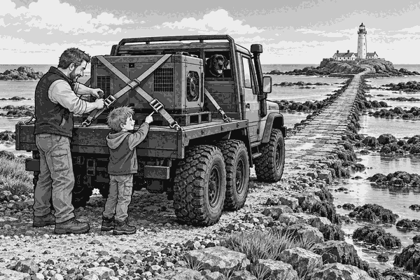

FICTION
The lighthouse stood on a rocky island.
Its great lamp warned ships away from the cliffs.
But that morning, the lighthouse generator had stopped.
A new generator waited on the back of Dad’s six wheel truck.
It was a heavy metal box.
Tom and Dad had one chance to deliver it.
The island road only appeared when the tide was low.
Soon, the sea would cover it again.
Scout watched from the back seat.
Dad checked the tide chart.
“We have enough time,” he said. “But we do not rush a heavy load.”
Two strong straps crossed over the generator.
Tom pointed to the first strap.
Dad pulled it tight.
They checked the second strap too.
The generator could not slide forwards, backwards or sideways.
Dad started the engine.
The truck rolled onto Tide Road.
Wet stones shone beneath the tyres.
Sea water splashed against both sides of the narrow road.
Dad selected a low gear.
The truck moved slowly, but it pushed with steady power.
Halfway across, Tom spotted driftwood on the road.
It was too large to drive over.
Dad stopped on a wide patch of stone.
He checked that no waves were crossing the road.
Then he moved the branch safely to one side.
Hauling fact: Heavy cargo must be held still. If it slides during a turn or sudden stop, it can make the vehicle hard to control.
They continued towards the lighthouse.
Behind them, small pools began to fill the lowest parts of the road.
“The tide is turning,” said Tom.
The final hill was short and steep.
The truck’s engine rumbled.
Dad kept the low gear and did not spin the tyres.
The six wheels climbed the wet stones.
At last, the truck reached the island gate.
The lighthouse keeper waved.
“Perfect timing!” she called.
They unloaded the generator with a small crane.
Soon, the lighthouse lamp began to turn again.
A bright beam swept across the sea.
Tom looked back at Tide Road.
Water now covered the middle of it.
They would stay safely on the island until the next low tide.
Scout curled up beside the warm generator shed.
The race was over.
The lighthouse was shining.
And every strap, gear and careful check had helped them win.
1. Why did Tom and Dad need to cross at low tide?
2. Why were the straps important?
3. What did Dad use to climb the final hill?